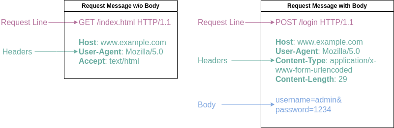
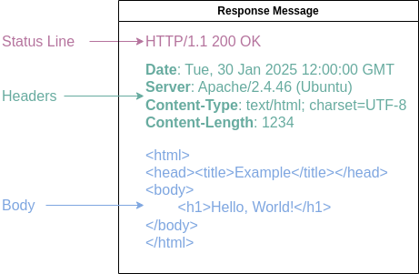
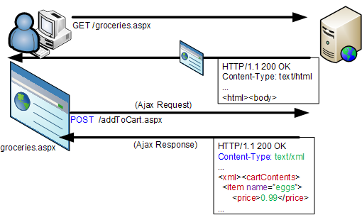

Keyboard shortcuts:
N/СпейсNext Slide
PPrevious Slide
OSlides Overview
ctrl+left clickZoom Element
If you want print version => add '
?print-pdf' at the end of slides URL (remove '#' fragment) and then print.
Like: https://wwwcourses.github.io/...CourseIntro.html?print-pdf
HTTP Basics and AJAX
Created for
Created by
Client-Server Communications on HTTP
Client-Server Communications on HTTP
Overview
- Client-Server Model: The client sends requests to the server, which responds with data.
- When the communication is on the Web, the Client and Server follows the HTTP.
- HTTP (Hypertext Transfer Protocol): a protocol used for transferring data over the web.
- It defines how Request and Response messages are formatted and transmitted, and how web servers and clients (like browsers) should respond to various commands.
- HTTP is a Stateless Protocol - each request is independent, with no memory of previous interactions.

The internals of HTTP Client Server Communications

HTTP Request Message Format
Request Message Format
Overview
- Each HTTP Request Message consists of: Request Line, Headers and Body(optional). 
{kind=link}
Request Line
<request-method> <request-URI> <HTTP-version>
- request-method: defines how to send the request (GET, POST, HEAD etc)
- request-URI: resource path - the URI of the resource requested
- HTTP-version: latest version is HTTP/3
GET /search?q=apple HTTP/3
HEAD /query.html HTTP/3
POST /login HTTP/3
Request Headers
field-name: field-value1[, field-value2, ...]
- Additional information about the request, and about the client itself, which is passed to the server.
Host: google.com
User-Agent: curl/7.47.0
Accept: */*
Request Body
- The Body in an HTTP request message is an optional section that can contain data sent to the server.
- It typically comes after the headers and is used to send additional information with the request, such as form data, JSON, XML, or file uploads.
Response Message Format
Response Message Format
- Each HTTP Response Message consists of: Status Line, Headers and Body(optional). 
{kind=link}
Status Line
<HTTP-version> <status-code> <reason-phrase>
- HTTP-version: The HTTP version used in this session.
- status-code: A three-digit number indicating the result of the request (e.g., 200 for success, 404 for not found).
- reason-phrase: gives a short explanation to the status code.
HTTP/1.1 200 OK
HTTP/1.1 204 No Content
HTTP/1.1 301 Moved Permanently
HTTP/1.1 304 Not Modified
HTTP/1.1 400 Bad Request
HTTP/1.1 404 Not Found
HTTP/1.1 500 Internal Server Error
HTTP/1.1 501 Not Implemented
HTTP/1.1 503 Service Unavailable
Response Headers
field-name: field-value1[, field-value2, ...]
- Additional information about the response, and about the server itself, which is passed to the client.
HTTP/1.1 200 OK
Server: Apache/2.4.46 (Unix)
Date: Fri, 3 Jan 2025 18:30:00 GMT
Set-Cookie: sessionId=abc123; Path=/; Secure; HttpOnly
Content-Type: text/plain; charset=UTF-8
Content-Length: 50
Response Body
- The response message body contains the actual content sent by the server in response to the client's request.
- It can include HTML, JSON, images, files, or any other type of data.
- For example, in a successful response (200 OK), the body may contain the requested HTML page or data. In a 404 Not Found response, the body might contain a message or page explaining that the requested resource could not be found.
- The body is optional in some responses, like 204 No Content, where no data is returned.
HTTP Request Methods
HTTP Request Methods
HTTP protocol defines a set of request methods, which a client can use to request a server resource.
The "GET" Request Method
Overview
- GET requests are used to retrieve data from the server (e.g., web page, image)
- GET requests should be used only to retrieve data, and not to change the server state.
- GET requests send data as part of the URL, usually in the query string
- GET requests should NEVER be used with sensitive data
- GET requests have length restrictions due to the size limit of URLs (typically around 2,000 characters)
- GET requests can be cached
- GET requests remain in the browser history and can be bookmarked.
"GET" Request Method Example
- In next example, the GET request is for retrieving product data (/products/12345) in JSON format from the server at www.example.com.
GET /products/12345 HTTP/1.1
Host: www.example.com
User-Agent: Mozilla/5.0 (Windows NT 10.0; Win64; x64) AppleWebKit/537.36 (KHTML, like Gecko) Chrome/91.0.4472.124 Safari/537.36
Accept: application/json
Accept-Language: en-US,en;q=0.9
Connection: keep-alive
The "POST" Request Method
Overview
- POST request method is used to sent data to the server, like customer information, file upload etc.
- POST request should change the server state (i.e. create or update resources).
- The data will be sent in the body of the request message
- The request headers Content-Type and Content-Length are used to notify the server the type and the length of the query string
- POST requests have no restrictions on data length
- POST requests are never cached
- POST requests do not remain in the browser history
- POST requests cannot be bookmarked
"POST" Request Method Example
- In this example, the POST request is used to submit a new user registration (with username and password) to the server at www.example.com. The data is sent in the body of the request as form-encoded text.
POST /users/register HTTP/1.1
Host: www.example.com
User-Agent: Mozilla/5.0 (Windows NT 10.0; Win64; x64) AppleWebKit/537.36 (KHTML, like Gecko) Chrome/91.0.4472.124 Safari/537.36
Content-Type: application/x-www-form-urlencoded
Content-Length: 29
Accept: application/json
Accept-Language: en-US,en;q=0.9
Connection: keep-alive
username=johndoe&password=securepassword
PUT/PATCH/DELETE HTTP Request Methods
PUT
- The PUT request method is used to update or create a resource on the server.
- Unlike POST, which is often used to create a new resource, PUT is typically used to replace an existing resource with the provided data.
- In this example, the PUT request is used to completely update a user's profile, including their username and email, on the server at www.example.com. The data is sent as JSON in the body.
PUT /users/12345 HTTP/1.1
Host: www.example.com
User-Agent: Mozilla/5.0 (Windows NT 10.0; Win64; x64) AppleWebKit/537.36 (KHTML, like Gecko) Chrome/91.0.4472.124 Safari/537.36
Content-Type: application/json
Content-Length: 60
Accept: application/json
Accept-Language: en-US,en;q=0.9
Connection: keep-alive
{
"username": "newusername",
"email": "newemail@example.com"
}
PATCH
- The PATCH request method is used to make partial updates to an existing resource on the server.
- Unlike PUT, which typically replaces the entire resource, PATCH modifies only specific parts of the resource.
- It is more efficient when only a small portion of a resource needs to be updated.
- In this example, the PATCH request is used to update a user's email address on the server at www.example.com without replacing the entire user profile. The data is sent as JSON in the body.
PATCH /users/12345 HTTP/1.1
Host: www.example.com
User-Agent: Mozilla/5.0 (Windows NT 10.0; Win64; x64) AppleWebKit/537.36 (KHTML, like Gecko) Chrome/91.0.4472.124 Safari/537.36
Content-Type: application/json
Content-Length: 40
Accept: application/json
Accept-Language: en-US,en;q=0.9
Connection: keep-alive
{
"email": "newemail@example.com"
}
DELETE
- Used to request the removal of a specific resource on the server.
- Typically, a DELETE request does not include a body, since the resource to be deleted is specified in the URL.
- In this example, the DELETE request is used to remove a user's profile with ID=12345 from the server at www.example.com.
DELETE /users/12345 HTTP/1.1
Host: www.example.com
User-Agent: Mozilla/5.0 (Windows NT 10.0; Win64; x64) AppleWebKit/537.36 (KHTML, like Gecko) Chrome/91.0.4472.124 Safari/537.36
Accept: application/json
Accept-Language: en-US,en;q=0.9
Connection: keep-alive
Static vs Dynamic websites (rendering)
Static vs Dynamic websites (rendering)
- Static Website:
- A static website consists of fixed content that is delivered directly to the browser as it is stored on the server.
- The content is pre-written and does not change unless manually edited by the website owner.
- When a user accesses a static page, the web server simply retrieves and sends the pre-built HTML, CSS, and JavaScript files to the client
- Use Case: Ideal for simple websites with content that does not change often, such as informational pages or documentation.
- Dynamic Websites:
- A dynamic website generates content in real-time based on user interactions, database queries, or other dynamic factors.
- The content is not fixed and is usually generated by a server-side language like PHP, Python, or JavaScript (Node.js)
- The content can be rendered on the server or client-side
- Use Case: Suitable for websites that require frequent updates, user interactivity, or personalized content, such as online stores, forums, and social media.

Client-side vs Server-side rendering
Client-side vs Server-side rendering
- Server-Side Rendering (SSR)
- Rendering Process: The server generates the HTML for the page and sends it to the browser, where the page is displayed immediately. JavaScript is loaded afterward to make the page interactive.
- Initial Load: Faster initial page load because the browser receives fully rendered HTML, so the page is visible almost immediately.
- Interactivity: Limited initial interactivity; JavaScript is used to enhance the page's behavior after it has been rendered.
- User Experience: The user sees content quicker but may experience some delay when interacting with the page, as it might need to request additional resources (like data).
- SEO: Better for SEO because search engines can index the content more easily since the content is rendered on the server and is present in the initial HTML response.
- Client-Side Rendering (CSR)
- Rendering Process: The browser downloads the HTML, CSS, and JavaScript, and uses JavaScript to dynamically render the content by fetching data and inserting it into the page.
- Initial Load: Slower initial page load because the browser needs to download JavaScript files and render the content dynamically after execution.
- Interactivity: High interactivity as JavaScript can update the page dynamically without needing a full reload, allowing for a more fluid user experience.
- User Experience: After the initial load, the user experience is faster for interactions since only data needs to be fetched from the server, making subsequent actions more responsive.
- SEO: Can be more challenging for SEO since search engines may have trouble indexing content that is rendered dynamically by JavaScript unless additional measures (like server-side rendering or prerendering) are used.
AJAX
Introduction to AJAX
- AJAX (Asynchronous JavaScript and XML) is a technique for creating dynamic web pages
- In reality, these days, the use of JSON prevails over XML, but for backward compatibility we do not say AJAJ
- It allows web pages to update asynchronously by making HTTP requests to the server in the background, without reloading the entire page
Traditional Model of Client-Server Communication

The traditional model of communication works synchronously.
Traditional Model is Synchronous

AJAX Model of Client-Server Communication
{kind=link}
The AJAX model of communication can work asynchronously.
AJAX Model is Asynchronous

AJAX request with XMLHttpRequest (XHR) Object
- XMLHttpRequest (XHR) is a JavaScript API used to send HTTP requests to a server and receive responses asynchronously.
- It allows web pages to fetch data from a server without reloading the page, enabling dynamic content updates.
- However, in modern web development, it is rarely used because the fetch API is more flexible, easier to work with, and supports promises, making it simpler to handle asynchronous code.
var xhr = new XMLHttpRequest();
xhr.open('GET', 'https://api.example.com/data', true);
xhr.onreadystatechange = function() {
if (xhr.readyState === 4 && xhr.status === 200) {
var data = JSON.parse(xhr.responseText);
console.log(data);
} else if (xhr.readyState === 4) {
console.error('Error:', xhr.statusText);
}
};
xhr.onerror = function() {
console.error('Error:', xhr.statusText);
};
xhr.send();
AJAX request with fetch APIs.
- Initiate a Request: You use the fetch() function to send an HTTP request to a server. The fetch() function takes a URL as its first argument and optionally an options object as its second argument to specify the request method (GET, POST, etc.), headers, body, and other configurations.
- Asynchronous Operation: The fetch() function returns a Promise. This allows the operation to be asynchronous, meaning the JavaScript code can continue executing without waiting for the server to respond. The promise resolves when the server responds.
- Handle the Response: Once the Promise resolves, you can handle the response using .then() and .catch(). Typically, you first check if the response was successful, then you parse the response data (usually as JSON) and handle it accordingly.
- Update the DOM: After processing the data received from the server, you can update the DOM dynamically without reloading the entire page. This is a key feature of AJAX, providing a smoother user experience.
fetch('https://api.example.com/data')
.then(response => response.json())
.then(data => console.log(data))
.catch(error => console.error('Error:', error));
Advantages of AJAX
- 1. Improves user experience.
- Pages can be updated asynchronously, leading to smoother and faster interactions.
- 2. Reduces server load.
- Only the necessary data is exchanged with the server, reducing bandwidth usage and load times.
- 3. Allows partial page updates.
- Only parts of the page need to be refreshed, rather than the entire page.
Limitations of AJAX
- 1. Complexity in debugging and maintenance.
- Asynchronous operations can be harder to debug and maintain.
- 2. Potential for security issues.
- Exposing more endpoints can increase the risk of vulnerabilities.
- 3. Search engine indexing challenges.
- Search engines may have difficulty indexing content that is dynamically loaded via AJAX.
JSON Overview
JSON Overview
- JSON = JavaScript Object Notation
- A data-interchange format
- Language agnostic
- Proposed by Douglas Crockford in early 2000s
Why JSON
- Easy for humans (and the machines) to read and write
- Minimalistic syntax
- A strict subset of JavaScript (could be passed directly to
eval()) - JSON Schema is also defined
JSON vs XML
{
'fruits': ['apple', 'orange', 'banana'],
}
apple
orange
banane
- Useful resources:
- JSON Example
- JSON Conversions and Tools
Syntax
JSON's basic data types
- Number
- a signed decimal number that may contain a fractional part
- String
- a sequence of zero or more Unicode characters, delimited by double quotation mark
- Boolean
- either of the values true or false
- Array
- an ordered list of zero or more values (may be of any type). Comma-separated elements in square brackets
- Object
- an unordered collection of
name:valuepairs, delimited by curly braces, where the names (also called keys) are strings. Pairs are separated by comma (trailing comma is not allowed)
JSON - example
{
"todos": [
{
"title": "Learn HTML",
"completed": true,
"id": 1
},
{
"title": "Learn CSS",
"completed": true,
"id": 2
},
{
"title": "Learn JS",
"completed": true,
"id": 3
}
]
}
JSON Validators
- JSONLint - online JSON Validator
- VSCode has built-in JSON support, including IntelliSense and validation
Parse and Stringify JSON
JSON to JS object (Parse JSON)
- It's important to understand that JSON is just a text format, not a JS data structure
- If we need to extract the information in a JSON string into respective JS data strucure, we must parse JSON string
const data = JSON.parse(jsonString);
// this is NOT a JS object, it's JUST a string
const jsonData = ` {
"title": "Learn HTML",
"completed": true,
"id": 1
}`;
console.log(typeof jsonData);
// parse json in rder to get the js object:
const data = JSON.parse(jsonData)
console.log(typeof data);
JS obj to JSON (stringify JSON)
- If we need to pass our JS data to some other program/server, we must convert the JS data into respective JSON string
var json = JSON.stringify(obj);
// this is a JS object
const data = {
"title": "Learn HTML",
"completed": true,
"id": 1
};
console.log(typeof data);
// let's convert it into JSON string:
const dataJSON = JSON.stringify(data)
console.log(typeof dataJSON);
Parse JSON from fetch()
- The
response.json()method returns a promise which resolves with the result of parsing the body text as JSON. - Note that despite the method being named json(), the result is not JSON but is instead the result of taking JSON as input and parsing it to produce a JavaScript object.
Parse JSON from fetch() - example
const url = 'https://jsonplaceholder.typicode.com/todos/1';
fetch(url)
.then( response => response.json() )
.then( todoObj => console.log(todoObj.title) )
Public APIs returning JSON
Public APIs returning JSON
- {JSON} Placeholder - free fake and reliable API for testing and prototyping.
- chucknorris.io - a free JSON API for hand curated Chuck Norris facts.
- Open Trivia Database API - a completely free JSON API for use in programming projects
- List of public APIs
- Public APIs list on GitHub
Exercises
Simple Jokes App
Task
- Create a page which shows random jokes on each button click, as shown in gif bellow.
- Use the
https://api.chucknorris.io/jokes/randomURL to fetch random joke data, or explore more in https://api.chucknorris.io/.
{kind=link}
These slides are based on
customized version of
framework